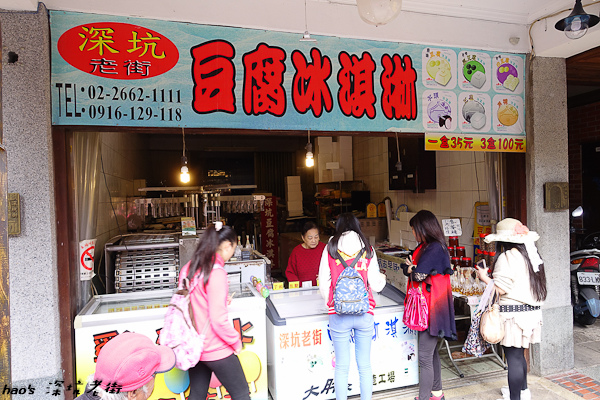
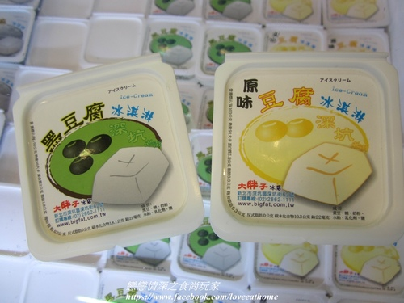

大胖子豆腐冰淇淋
google評價：4.3★
店家資訊
新北市深坑區深坑街62號
營業時間：早上9:00到晚上8:00
店家電話：02-2662-1111

推薦菜單
1盒35元 口味如下:
原味豆腐 炭燒黑豆腐 炭燒白豆腐
芋頭 芝麻 焦糖
顧客評論
首先這家是非常特別的冰淇淋店，因為許多口味都是和豆腐有關的。第一種是黑豆腐冰淇淋，甜度很低，很適合當清爽的飯後甜點，而白豆腐冰淇淋是用原味豆腐做的，吃起來和原味豆腐的味道很香，但聞的到豆香，口感是有點帶有沙沙感，很天然的味道。如果很喜歡甜的人，店家也有其他口味適合像是焦糖冰淇淋。